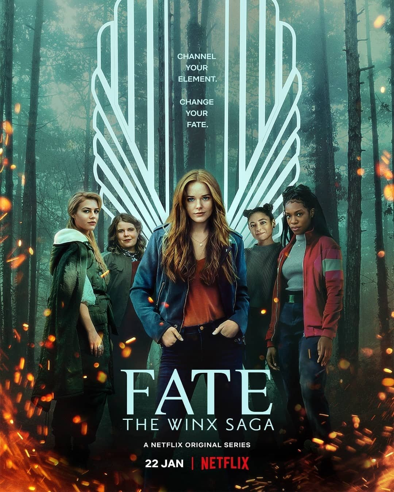

Fate Winx Saga
2/10
You’re telling me that they go to a fairy school and there’s no lesbians? Bullshit. I have one question: why was there not a female gay character? There is a male who is bi, but what about a lesbian or even a bi girl? This is homophobic. The special effects are pretty cool, and I like the acting. This review is from a lesbian point of view and has a lesbian disappointed.